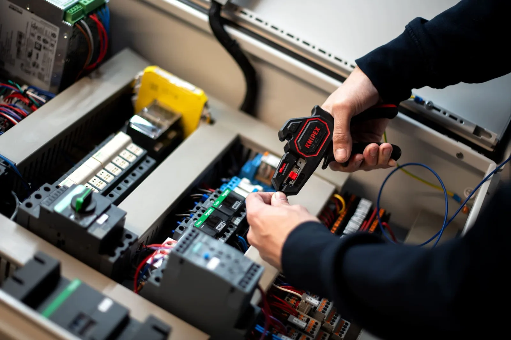

Elk betrouwbaar paneel begint op de tekentafel. Onze engineers ontwerpen de elektrotechniek achter uw installatie: schema’s, dimensionering en componentkeuze.
Hardware engineering is het elektrotechnisch ontwerp dat aan elke besturingskast voorafgaat: het opstellen van schema’s, het dimensioneren van voedingen, beveiligingen en bekabeling, en het selecteren van de juiste componenten.
Goed ontwerp voorkomt problemen die je later duur betaalt: overbelasting, storingsgevoeligheid, onnodig energieverbruik of een kast die niet uitbreidbaar is. Onze engineers denken vooruit, ook aan de installatie van overmorgen.

Compleet en gedocumenteerd, klaar voor bouw én toekomstig onderhoud.
Vrijblijvend gesprek over uw proces en wensen.
Engineering, schema's en componentkeuze.
Assemblage en bedrading in eigen werkplaats.
Volledige functietest vóór uitlevering.
Installatie, inbedrijfstelling en onderhoud.
Volledig uitgewerkte elektrotechnische schema's, dimensionering van voedingen, beveiligingen en bekabeling, componentselectie en een onderhoudsvriendelijk documentatiedossier.
Ja, ook als die verouderd of onnauwkeurig zijn. Voor klanten hebben we vaker schema's van eerdere leveranciers uitgeplozen en gecorrigeerd.
Ja, we ontwerpen herhaalbare, gedocumenteerde oplossingen die geschikt zijn voor seriebouw, inclusief optimalisatie van bedrading en componentkeuze.
Vrijblijvend adviesgesprek · Offerte binnen 5 werkdagen · Reactie binnen 24 uur